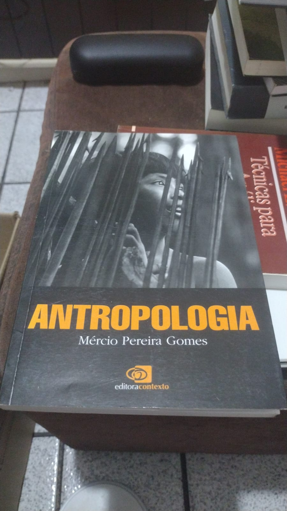

Bem-vindo à minha coleção!
Aqui você encontrará uma cuidadosa seleção de 51 livros que estou disponibilizando para venda. Cada livro foi escolhido com carinho e estão em ótimo estado de conservação.
Para saber mais sobre preços ou condições de um título específico, entre em contato através das informações abaixo.
Informações de Contato
Nome: Fernando Reis
E-mail: fernandoreis@hotmail.com
Telefone/WhatsApp: (31) 98353-4554
Livros Disponíveis

A Corrosão do Caráter
Uma análise sobre como o novo capitalismo flexível afeta o caráter pessoal e a vida familiar dos trabalhadores.
Tenho interesse
A Ditadura Derrotada
Parte da série de Elio Gaspari sobre a ditadura militar brasileira, cobrindo a fase de seu declínio.
Tenho interesse
A Ditadura Encurralada
Um dos volumes da série sobre a ditadura militar brasileira, focando no período em que o regime começou a perder força.
Tenho interesse
A Ditadura Envergonhada
Volume inicial da série sobre a ditadura militar que analisa o período inicial do regime após o golpe de 1964.
Tenho interesse
A Ditadura Escancarada
Parte da série sobre a ditadura militar brasileira que aborda o período mais repressivo do regime, após o AI-5.
Tenho interesse
A Ética Protestante e o Espírito do Capitalismo
Obra clássica da sociologia que analisa a relação entre a ética protestante e o desenvolvimento do capitalismo no Ocidente.
Tenho interesse
A Garota do Penhasco
Romance que mistura mistério e drama, ambientado em um penhasco na costa inglesa.
Tenho interesse
A Grande Transformação
Análise histórica e econômica sobre as origens políticas e econômicas do nosso tempo e a formação da economia de mercado.
Tenho interesse
A Lei dos Povos
Obra de filosofia política onde Rawls estende sua teoria da justiça para abordar questões de direito internacional.
Tenho interesse
A Subsistência do Homem
Uma análise antropológica e histórica sobre como as sociedades organizaram suas economias ao longo do tempo.
Tenho interesse
A Utopia do Brasil
Uma análise sobre a formação social e econômica do Brasil e os sonhos de desenvolvimento nacional.
Tenho interesseAmerican Theocracy
Uma análise da influência do fundamentalismo religioso, do petróleo e do débito financeiro na política americana.
Tenho interesseAntifrágil
Uma análise sobre sistemas que se beneficiam da volatilidade, do caos e da desordem, tornando-se mais fortes com o stress.
Tenho interesse
Antropologia
Introdução aos conceitos e teorias fundamentais da antropologia social e cultural.
Tenho interesse
Bens Públicos Globais
Uma análise sobre cooperação internacional no século XXI e a gestão de recursos que beneficiam toda a humanidade.
Tenho interesse
China - O Socialismo do Século XXI
Análise do modelo econômico e político chinês contemporâneo e suas particularidades.
Tenho interesse
Crescer com Estabilidade
Uma análise sobre os desafios do crescimento econômico sustentável com estabilidade macroeconômica.
Tenho interesse
Cristianismo e Política
Uma análise das relações entre fé cristã e atuação política ao longo da história.
Tenho interesse
Detente and the Nixon Doctrine
Análise da política externa americana durante o governo Nixon e o período de distensão da Guerra Fria.
Tenho interesse
Discursos Históricos
Coletânea de importantes discursos que marcaram a história mundial.
Tenho interesse
Ditadura e Democracia no Brasil
Análise comparativa entre regimes ditatoriais e democráticos, com foco na transição brasileira.
Tenho interesse
Economia Brasileira
Panorama abrangente da formação e desenvolvimento da economia brasileira.
Tenho interesse
Era dos Extremos: O Breve Século XX
Análise histórica do período entre 1914 e 1991, mostrando as transformações políticas, econômicas e sociais que marcaram o século XX.
Tenho interesse
Espírito Santo
Estudo teológico sobre a pessoa e a obra do Espírito Santo na teologia cristã.
Tenho interesse
Estratégia Competitiva
Técnicas para análise de indústrias e concorrentes, obra fundamental da estratégia empresarial moderna.
Tenho interesse
Família, Afeto e Finanças
Guia sobre como administrar as finanças familiares mantendo relações saudáveis no lar.
Tenho interesse
História da Riqueza do Homem
Uma introdução à história econômica da humanidade, desde a Idade Média até o século XX.
Tenho interesse
© 2025 Minha Coleção de Livros. Todos os direitos reservados.
Este site foi criado para facilitar a venda de uma coleção pessoal de livros.